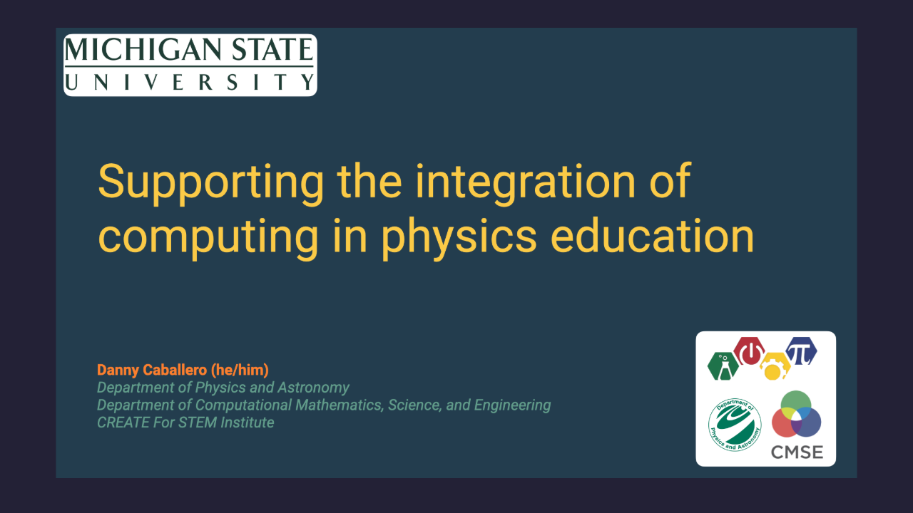

2025 PICUP SLICE Goal Setting
2025-06-24

University of Wisconsin - River Falls
Abstract: Goal setting workshop for the 2025 PICUP SLICE
IRB Training for CERL
2025-06-18
Department of Computational Mathematics, Science, and Engineering, Michigan State University
Abstract: A training session on Institutional Review Board (IRB) processes for the CERL team, focusing on ethical research practices and compliance with regulations.
2025 PICUP SLICE Pre-Meeting Welcome
2025-06-18
Zoom
Abstract: A pre-meeting welcome and planning session for the 2025 PICUP SLICE event, aimed at fostering collaboration and setting the agenda for the upcoming activities.
Advocating for Science
2025-04-18
Department of Computational Mathematics, Science, and Engineering, Michigan State University
Abstract: A presentation given to CMSE's graduate students on advocating for science.
Computing is Essential for the Future of Physics Education
2025-04-11
Department of Physics and Astronomy, Swarthmore College, Swarthmore, PA
Abstract: Computing is central to the enterprise of physics. It is used to model physical systems, to perform analyses of data, and to control and monitor experiments. And while computing is used widely in physics, across the sciences, and in engineering, it has been a incredible community effort to integrate computing into the undergraduate physics curriculum. Over the last decade, physicists, physics educators, and physics education researchers have worked together to develop a community devoted to integrating computing in many aspects of physics education and to develop resources that support this substantive change. Alongside the professional development of faculty and construction of curricular materials, physics education researchers have studied the methods and impacts of these and other efforts. In this talk, I will trace the history and development on computing in physics education, discuss the present state of the field, and share some of the necessary conversations needed to continue to ensure physics education is prepared for the future.
Research: What, Why, How
2025-03-11
Lyman Briggs College, Michigan State University
Abstract: A presentation given to Lyman Briggs College students on the nature of research, its purpose, and how to get started. Ends with defending research with respect to the new administrative state.
Resisting the Bullshit
2025-02-24
Department of Physics and Astronomy, Michigan State University
Abstract: A presentation given to MSU's physics and astronomy students on dealing with the new administrative state.
We need Science Education Research for AI
2024-10-15
CREATE for STEM Institute, Michigan State University, East Lansing, MI
Abstract: We hosted Sen. Peters and his team at MSU to discuss the importance of science education research for AI.
We Don't Need AI in Science Education; We Need Science Education Research for AI
2024-10-01
Exploring System Dynamics in the Natural World with AI Lecture Series, University of Oslo, Oslo, Norway
Abstract: This presentation discusses the reasons why AI is not necessary in science education and explores alternative approaches.
Supporting the Integration of Computing in Physics Education
2024-03-01

Abstract: Computing has revolutionized how modern science is done. Modern scientists use computational techniques to reduce mountains of data, to simulate impossible experiments, and to develop intuition about the behavior of complex systems. Much of the research completed by modern scientists would be impossible without the use of computing. And yet, while computing is a crucial tool of practicing scientists, most modern science curricula do not reflect its importance and utility. In this talk, I will discuss the urgent need to construct such curricula in physics and present research that investigates the challenges at a variety of all scales from the largest (institutional structures) to the smallest (student understanding of a concept). I will discuss how the results of this research can be leveraged to facilitate the computational revolution in science education. This research will help us understand and develop institutional incentives, effective teaching practices, evidence-based course activities, and valid assessment tools.
This work has been supported by Michigan State University's CREATE for STEM Institute, the National Science Foundation, the Norwegian Agency for Quality Assurance in Education (NOKUT), the Norwegian Research Council, and the Thon Foundation.
science, education, computing, & community…in ten(ish) minutes
2023-09-03
Lappan-Phillips Lecture, Michigan State University, East Lansing, MI
Abstract: A short talk I gave when I was endowed with the Lappan-Phillips Professorship in Physics Education at Michigan State University.
Towards a more diverse and equitable physics graduate program
2021-11-23

Department of Physics, The Ohio State University, Columbus, OH
Abstract: Physics departments have a moral imperative to address the historical and continued systemic inequities in our community. Women, people of color, LBGTQIA+ folks, veterans, persons with disabilities, and those who hold intersecting identities from those communities are not well-represented in physics programs or as graduates of physics programs. This is a complex issue, but we can point to research that indicates that, in many cases, the culture of physics excludes those folks from participating. While there are many places where we can effect change, our work has focused on graduate physics programs. At Michigan State University (MSU), we have begun a conscious effort to reconstruct our graduate physics program with an eye towards a more supportive and inclusive program. In this talk, we will situate our efforts in the larger narrative of diversity, equity, and inclusion (DEI) in STEM while presenting the specific changes that we have made to the MSU admissions process. Our research and development efforts include investigations into patterns of admission including how our rubric-based holistic review process has affected those patterns. Our work has focused on the graduate admissions process, but we are actively working to effect change in the graduate program itself. This work has been supported by MSU’s College of Natural Science and the Lappan-Phillips Foundation.